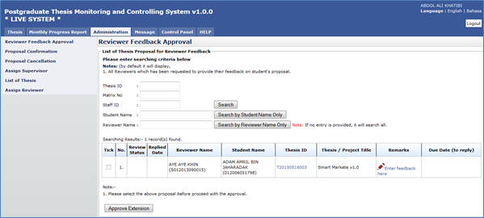
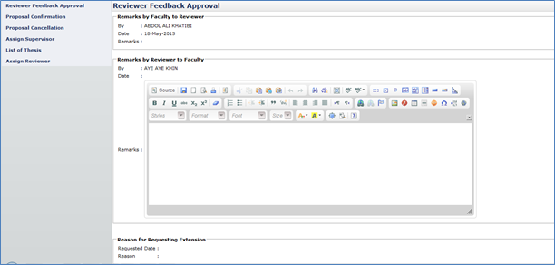

Reviewer Feedback Approval
All process to approve/disapprove, view, assign or cancellation are as listed on the Left panel.

Figure 48: Administration Tab – Reviewer Feedback Approval
Steps:-
- Click on the Administration tab on the system Top panel section.
- The Administration menu will be displayed on the system Left panel and click on it.
- Click the Reviewer Feedback Approval and the searching page will be displayed which the user can search for a particular reviewer to give feedback on it or read the feedback that has been submit by reviewer.
- Enter the Thesis’s ID or Matrix No or Staff ID. into the field and click on Search button to Reviewer Feedback
- The record will be displayed under the search result.
- Or Reviewer Feedback can be search via Student Name or Reviewer Name by enter the student name and click Search by Student Name Only or enter the reviewer name and click the Search by Reviewer Name Only.
- The record will be displayed under the search result
- To give the feedback or remarks or read the feedback, click on the link Enter feedback here to proceed.

Figure 19: Thesis Tab – Reviewer Feedback Approval (...cont’d)
Steps:-
- After clicking the link Enter feedback here, the result will be shown like above.
- Insert the necessary remark or feedback and click the Update button to proceed and click to Back button to return to previous page.
Figure 20: Administration Tab – Reviewer Feedback Approval search result
Steps:-
- Tick the selected result to approve the extension then Click the Approve Extension button to proceed.